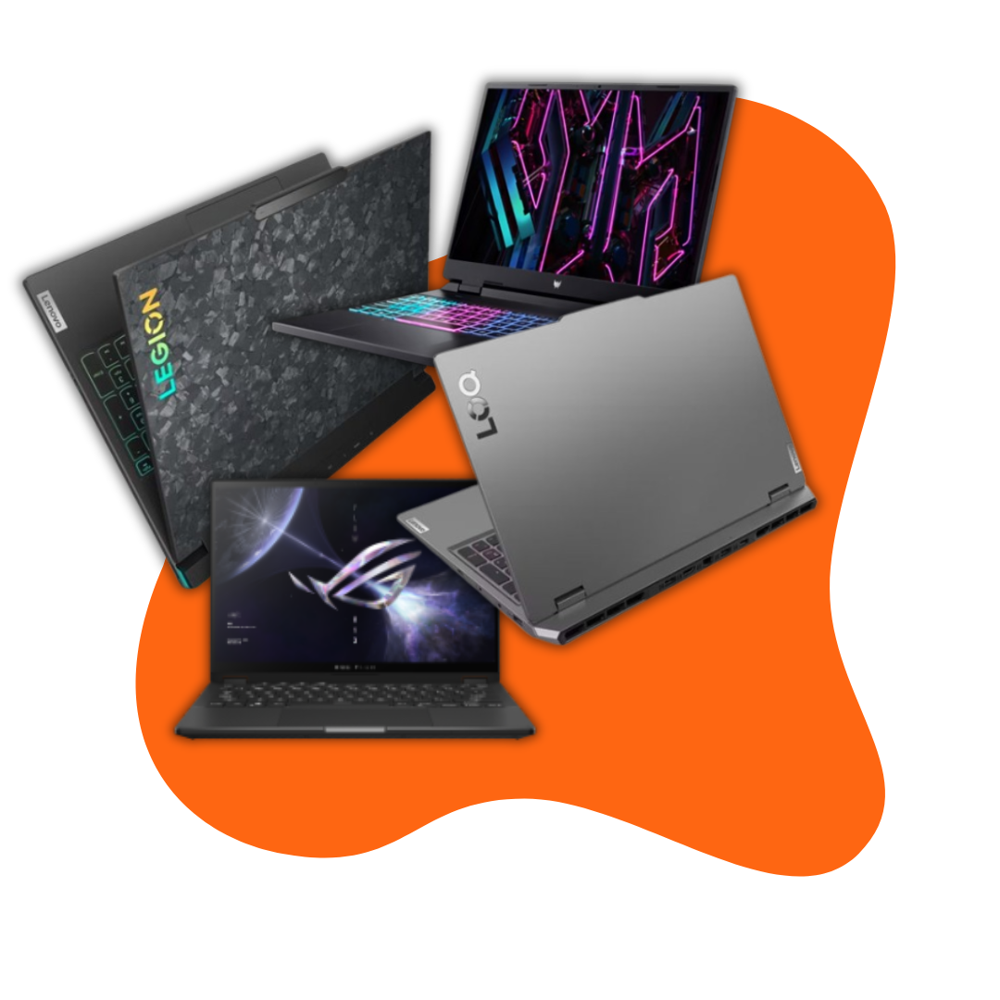
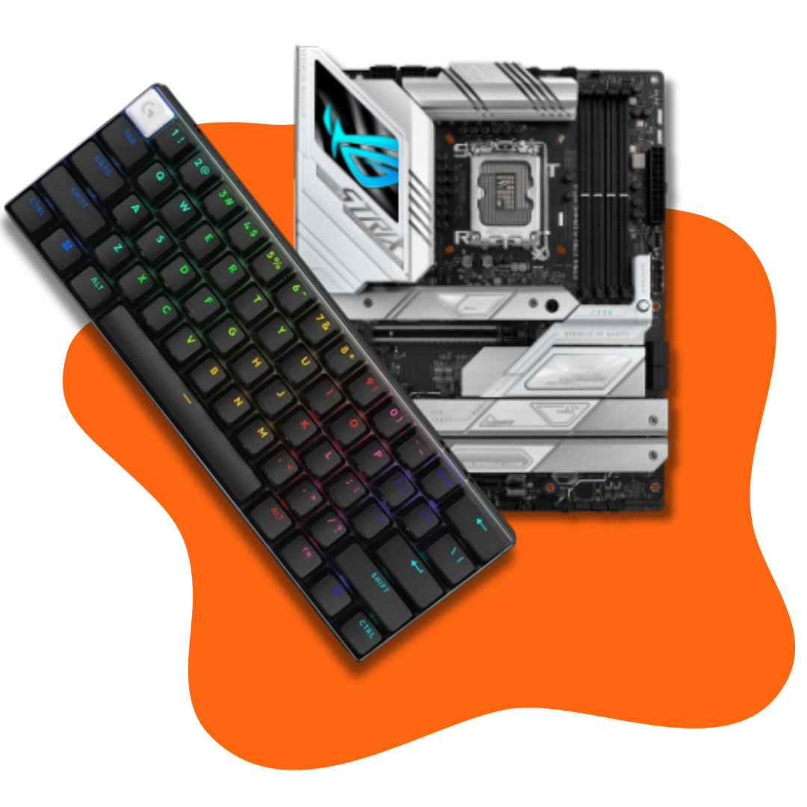
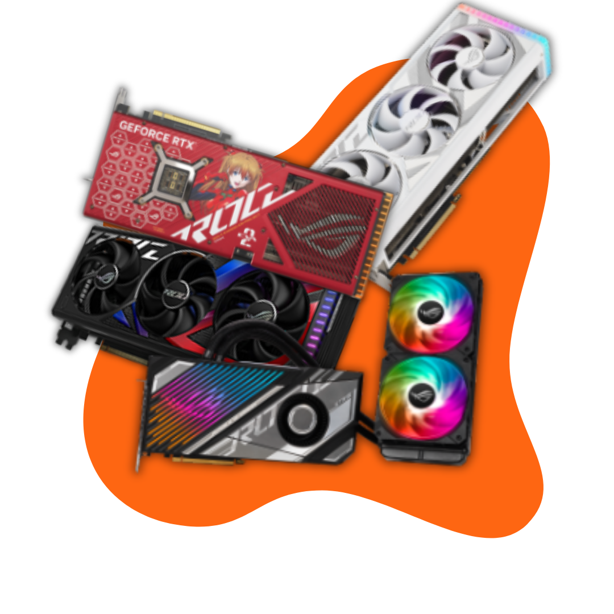

Macam Macam Laptop Gaming
Laptop berperforma tinggi yang dirancang untuk menjalankan game dengan grafis intensif. Dilengkapi dengan prosesor cepat, kartu grafis kuat, RAM besar, dan layar dengan refresh rate tinggi, laptop ini memberikan gameplay yang lancar. Biasanya dilengkapi dengan sistem pendingin canggih dan keyboard dengan pencahayaan RGB, laptop gaming juga menawarkan desain yang tangguh dan portabilitas bagi para gamer.

Macam Macam Aksesoris
headset, keyboard, mouse, dan mousepad yang dirancang untuk meningkatkan kenyamanan, performa, dan pengalaman bermain game.

Macam Macam Monitor
Penjualan monitor gaming menawarkan layar dengan refresh rate tinggi, resolusi tajam, dan fitur seperti G-Sync atau FreeSync untuk tampilan yang lebih halus. Monitor ini dirancang untuk memberikan pengalaman visual terbaik bagi para gamer, dengan respons cepat dan kualitas gambar superior.

Macam Macam Grapich Card
berkinerja tinggi yang dirancang untuk meningkatkan kualitas visual dan performa game. Dengan fitur seperti memori besar, clock speed tinggi, dan dukungan teknologi seperti ray tracing dan DLSS, VGA gaming memungkinkan rendering grafis yang lebih realistis dan gameplay yang lebih halus.